Aug 2026 · self-hosting, CalDAV, orchestration
After the Google Exit my tasks and calendar live on my own CalDAV server. But a server is not a product. I needed two small apps on top: one for tasks, one for habits, plus the glue that keeps my kanbans, my phone and my browser looking at the same data. This is how it is all orchestrated in the backend.
Everything is a small systemd unit on two machines, talking over HTTP and CalDAV:
mini (Win Mini, 100.95.188.29) jacinto (Pi, 100.99.112.42) radicale :5232 CalDAV server alientasks :5233 tasks UI beaverhabits :8081 habits tracker alientasks-tail :5233 socat divalien-kanban.timer (every 30 min) tailscale serve HTTPS └─ sync_kanban_to_caldav.py
The phone talks to Radicale through DAVx5: the Tasks app for todos, Etar for the calendar. The browser talks to the same server through alientasks. The kanbans in Obsidian sync into it every 30 minutes. One source of truth, three kinds of clients.

Radicale is a minimal CalDAV server and the only place where tasks and events
actually live: eve/tasks/ (608 VTODOs), eve/work/
(4,531 events), eve/calendar/ (personal). The apps do not own the
data; they are views.
CATEGORIES and flips
STATUS when you tick a box.
sync_kanban_to_caldav.py, turning Obsidian kanban rows into
VTODOs (and back).
Habits are a different problem from tasks, so they get a different app:
Alien Tracker (a fork of Beaver Habits), a Python/NiceGUI app on
the mini at :8081. No login: a trusted-email drop-in authenticates
the single user. Habits live in SQLite as a JSON blob, one row per habit with its
records, tags and streaks. It is deliberately separate from CalDAV, because a
habit is not a to-do. It links out to the tasks when you want to go deeper.
There is no orchestrator app, no message queue. The orchestration is systemd:
radicale.service and beaverhabits.service run on the mini.alientasks.service runs on the Pi (bound to loopback) with a socat unit exposing :5233 on the tailnet.divalien-kanban.timer fires every 30 minutes with Persistent=true, so a sleeping machine catches up on wake.The same instinct as my data pipelines: idempotent syncs, a timer instead of a daemon, and verification after every write.
Two machines, one calendar contract, three kinds of clients, and everything owned. The backend of my life is boring on purpose: the boring parts are the ones that keep working while I sleep, and catch up when I wake up.